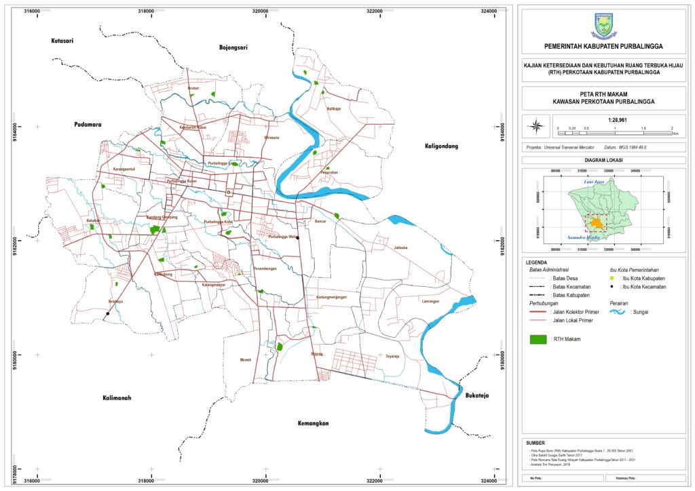

RTH Makam
Pemakaman termasuk dalam salah satu bentuk ruang terbuka hijau kota, karena di area pemakaman ditanam beberapa jenis tanaman yang bertujuan sebagai peneduh dan pengarah. Di Purbalingga taman makam berada di Jl. A Yani, yaitu TMP Purbosaroyo, sedangkan pemakaman hampir dimiliki oleh setiap kelurahan yang ada di Perkotaan Purbalingga. Pada kawasan pemakaman, rata-rata penghijauan pada kawasan pemakaman bertujuan untuk peneduh serta pembatas areal kawasan. Pemakaman umum di tingkat lingkungan Kelurahan, fungsi penghijauan lebih diarahkan pada fungsi peneduh dan pembatas areal pemakaman dengan kawasan permukiman penduduk. Dominasi tanaman yang ada di kawasan pemakaman adalah kamboja, pohon pisang, angsana, jati, bambu, hangjuang, puring. Sementara tanaman penutup tanah (groundcover), banyak ditumbuhi rumput liar, dan alang-alang. RTH pemakaman pada Perkotaan Purbalingga berdasarkan identifikasi tahun 2018 antara lain:
| No | Nama Pemakaman | Luas (Ha) |
|---|---|---|
| 1 | TPM Purbosaroyo (Kandang gampang) | 1,48 |
| 2 | Makam Selabaya | 0,36 |
| 3 | Makam Baitus Sakinah Kalikabong | 0,28 |
| 4 | Makam Kalikabong 1 | 0,40 |
| 5 | Makam Kalikabong 2 | 1,40 |
| 6 | Makam Reksopranelo Purbalingga Kidul | 1,52 |
| 7 | Makam Bancar 1 | 0,34 |
| 8 | Makam Bancar 2 | 0,76 |
| 9 | Makam Melati Toyareja, Mewek | 0,39 |
| 10 | Makam Mewek | 0,62 |
| 11 | Makam Karangmanyar | 0,51 |
| 12 | Makam Bojong 1 | 0,07 |
| 13 | Makam Mewek (Jl. Cahyana) | 0,43 |
| 14 | Makam Bojong 2 | 0,29 |
| 15 | Makam penambongan | 0,60 |
| 16 | Makam Purbalingga Wetan | 0,28 |
| 17 | Makam Muslim Ekosaroyo Penaruban | 0,35 |
| 18 | Makam Penaruban | 0,48 |
| 19 | Makam Kalikajar 1 | 0,30 |
| 20 | Makam Kalikajar 2 | 0,32 |
| 21 | Makam Kalikajar 3 | 0,11 |
| 22 | Makam Arsantaka Purbalingga Lor | 1,66 |
| 23 | Makam Lerep (Brobot) | 0,40 |
| 24 | Makam Brobot (Jl. AW Sumarmo) | 0,17 |
| 25 | Makam Babakan 1 | 0,40 |
| 26 | Makam Babakan 2 | 0,71 |
| 27 | Makam Babakan 3 | 0,22 |
| 28 | Makam Purbalingga Lor | 0,44 |
| 29 | Makam Mugirahayu Karangsentul | 0,31 |
| 30 | Makam Karangsentul | 0,29 |
| 31 | Makam Kembaran Kulon | 0,08 |
| 32 | Makam Kandanggampang | 1,02 |
| 33 | Makam Kedungmenjangan | 1,07 |
